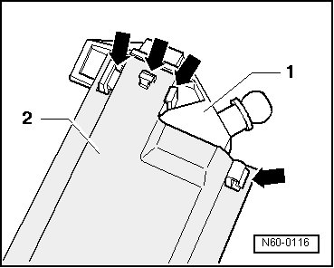
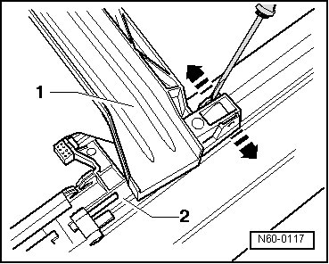
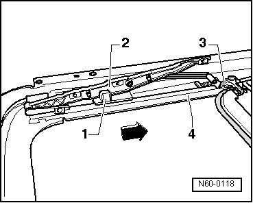

Sunroof / Moonroof Track: Service and Repair
Sunroof with Glass Panel
Slotted Guide Rail
- Removing glass panel for sunroof.
- Remove drive motor for sunroof.
- Unclip end piece - 1 - from guide rail - 2 - - arrows - and then remove.

• When installing end piece - 1 -, seal against guide rail with butyl adhesive sealing cord AKL 450 005 05.
- Using a screw driver, carefully disengage rain channel - 1 - on both sides at mounting from guide catch - 2 - and remove.

- Slide rear guide - 1 - in direction of arrow in guide rail - 4 - until the lock mechanism of guide catch - 3 - is released.

- Remove rear guide - 1 -, guide catch - 3 - and slotted guide rail - 2 - together out of guide rail - 4 -.
• Always replace guides with cable as a pair.